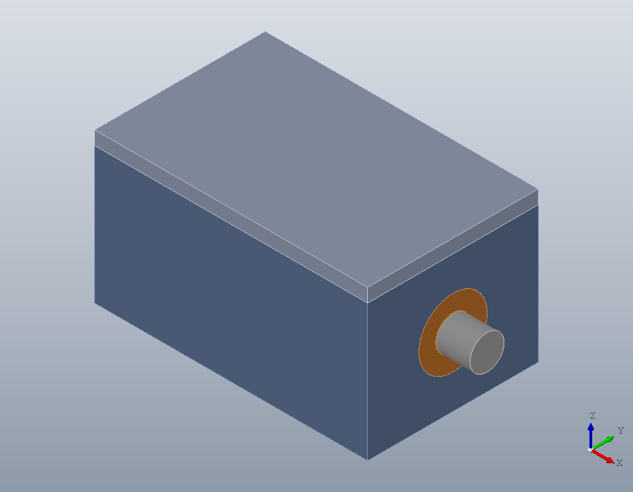
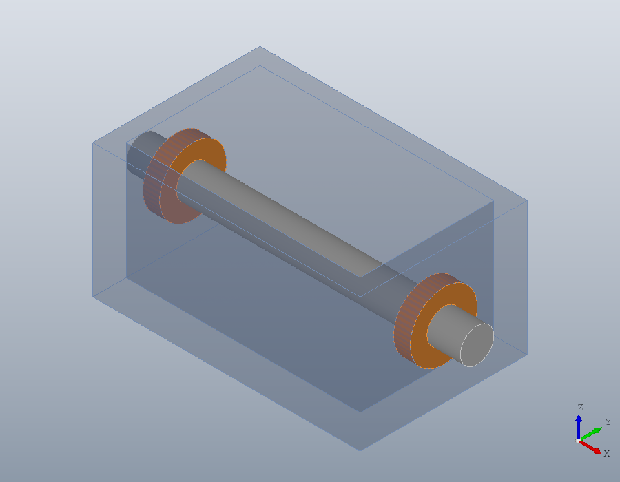
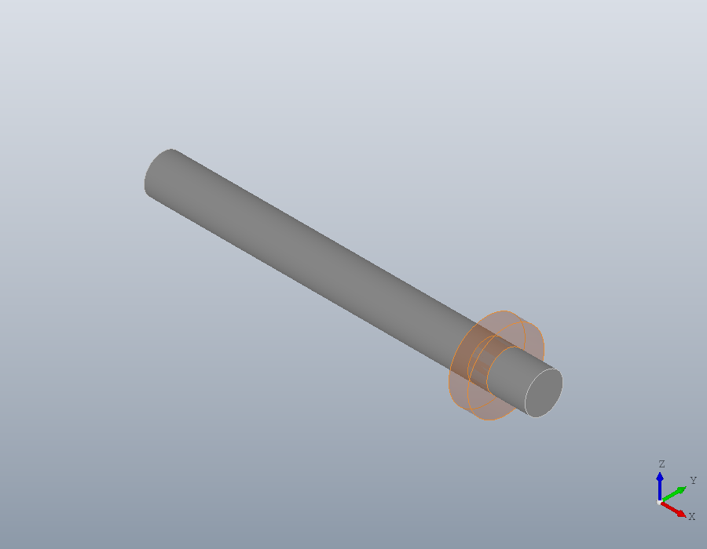
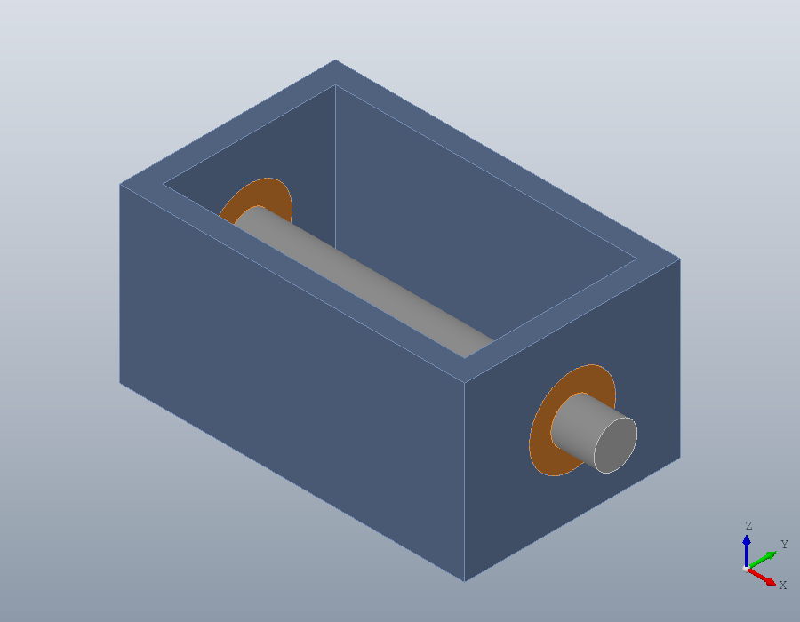
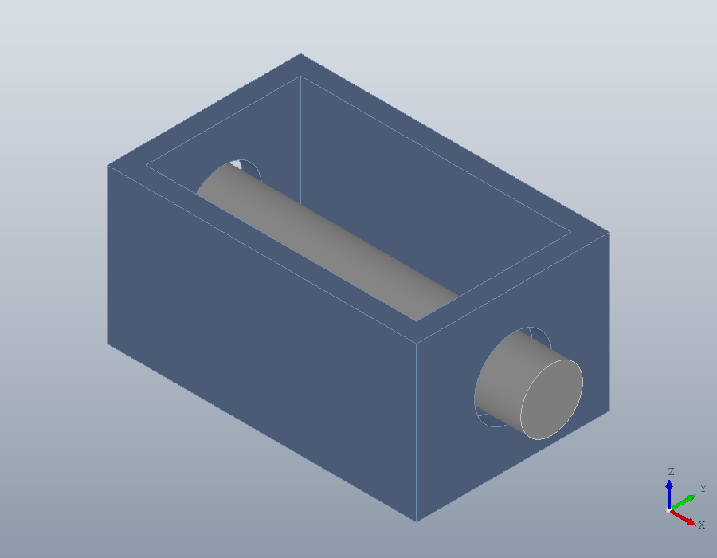
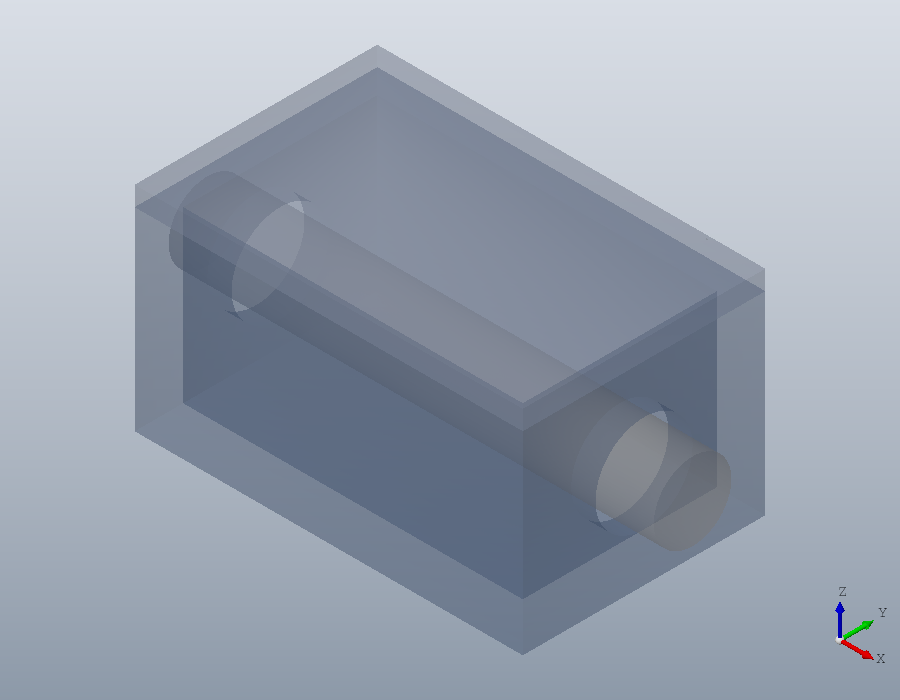

Looking inside a model
A model that closes around its parts hides them: a housing hides the shaft it carries, a lid hides the housing. The viewer can hide any solid, or show it through, while the model stays as it is. model.Viewer.opacity sets it, solids lists what it can be set on, and a pick of solids tells which is which.
A model to look into
A housing open at the top, bored through both ends, with a lid on it and a shaft running in two bearings. The shaft and its bearings are one sub-assembly, the rotor.
bore = rotate (solid.cylinder (10, 100), 90, [0, 1, 0]);
housing = subtract (solid.box (80, 50, 40), ...
translate (solid.box (70, 40, 40), [5, 5, 5]), ...
translate (bore, [-10, 25, 20]));
housing.Colour = [0.45, 0.55, 0.7];
lid = solid.box (80, 50, 4);
lid.Colour = [0.7, 0.75, 0.85];
shaft = solid.cylinder (5, 100);
shaft.Colour = [0.75, 0.75, 0.75];
bearing = subtract (solid.cylinder (10, 5), solid.cylinder (5, 5));
bearing.Colour = [0.9, 0.55, 0.2];
bearing.Name = 'Bearing';
rotor = model.Assembly ('rotor');
rotor = add (rotor, 'shaft', shaft, geom.UCS ([1, 0, 0], [-10, 0, 0]));
rotor = add (rotor, 'bearing', bearing, geom.UCS ([1, 0, 0], [0, 0, 0]), ...
'Name', 'front bearing');
rotor = add (rotor, 'bearing', [], geom.UCS ([1, 0, 0], [75, 0, 0]), ...
'Name', 'rear bearing');
G = model.Assembly ('gearbox');
G = add (G, 'housing', housing, geom.UCS ());
G = add (G, 'lid', lid, geom.UCS ([0, 0, 1], [0, 0, 40]));
G = add (G, 'rotor', rotor, geom.UCS ([0, 0, 1], [0, 25, 20]));
show (G);
Closed, it shows nothing of the rotor.
What there is to hide
solids lists the solids of an assembly in the order shape gives them: each with its index, the name its part gives it, its colour, the part it belongs to and its path, the placements from the top of the assembly down to it.
L = solids (G);
[{L.index}', {L.part}', cellfun(@(p) strjoin (p, ' / '), {L.path}', ...
'UniformOutput', false)]ans =
{
[1,1] = 1
[2,1] = 2
[3,1] = 3
[4,1] = 4
[5,1] = 5
[1,2] = housing
[2,2] = lid
[3,2] = shaft
[4,2] = bearing
[5,2] = bearing
[1,3] = housing
[2,3] = lid
[3,3] = rotor / shaft
[4,3] = rotor / front bearing
[5,3] = rotor / rear bearing
}Hiding and showing through
opacity takes a placement's name and an opacity from 1, opaque, to 0, hidden. Hidden, the lid is gone; at 0.3 the housing is a glass case round the rotor.
V = show (G);
opacity (V, 'lid', 0);
opacity (V, 'housing', 0.3);
A name chooses every solid of that name, and every solid under a placement of that name, however deep. 'Bearing' is the name the bearing part gives its solid, so it shows both bearings through. A path, a cell of placement names from the top, chooses exactly one placement and what is under it, here the front bearing alone, which it hides.
V = show (G);
opacity (V, 'lid', 0);
opacity (V, 'housing', 0);
opacity (V, 'Bearing', 0.3);
opacity (V, {'rotor', 'front bearing'}, 0);
Which solid is which
A pick of solids answers which solid a click lands on. On an assembly pick picks nothing else: its parts are edited as parts, not inside the assembly. Click the lid, press Enter, and the pick gives back the solid's index and the code that chooses it in opacity:
V = show (G);
[I, CODE] = pick (V)
opacity (V, eval (CODE), 0);I = 2
CODE = {'lid'}
Settings that outlast a change
Showing the model again keeps what was set by a name, a path or 'all', so a part can be changed and looked at in the same way at once. The settings by index are dropped, since a change can number the solids anew. A thicker shaft, its bearings taken out to fit it, with the lid still hidden:
V = show (G);
opacity (V, 'lid', 0);
shaft = solid.cylinder (8, 100);
shaft.Colour = [0.75, 0.75, 0.75];
rotor = model.Assembly ('rotor');
rotor = add (rotor, 'shaft', shaft, geom.UCS ([1, 0, 0], [-10, 0, 0]));
G = model.Assembly ('gearbox');
G = add (G, 'housing', housing, geom.UCS ());
G = add (G, 'lid', lid, geom.UCS ([0, 0, 1], [0, 0, 40]));
G = add (G, 'rotor', rotor, geom.UCS ([0, 0, 1], [0, 25, 20]));
show (G);
opacity (V)ans =
1
0
1
Meshes
A mesh has no solids to name, so it takes one opacity for the whole, through 'all':
M = tessellate (G);
W = show (M);
opacity (W, 'all', 0.4);